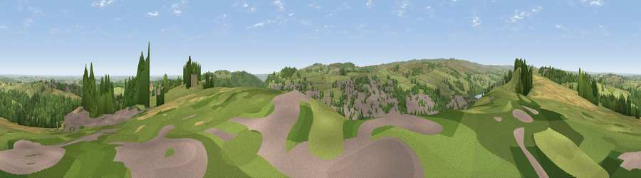

Viewpoint near Green Moor
#4063 in England · top 1% of its area beats it · near Green MoorThe view, rendered

A 360° render of this exact spot computed from the terrain model, tree cover and land cover — summer colours, afternoon light, calibrated against photographs of famous viewpoints. Real trees, hedges and buildings will differ in detail.
The panorama
Grey silhouette: terrain skyline in each direction (720 bearings, Earth curvature and refraction included). Dashed green: skyline with trees (+15 m) and buildings (+8 m) as obstacles. Blue strip: how far the ground is visible on each bearing.
Where the view opens
Wedge length = distance to the farthest visible ground on that bearing (vegetation-aware). Rings at 10, 25 and 50 km.
What fills the view
34% grassland · 31% woodland · 28% built-up · 7% cropland
Angular shares of the visible panorama (visual magnitude), not map area. Landscape diversity 0.56 (0–1 Shannon).
Key numbers
More beautiful places nearby
The staircase of upgrades: each row has a higher view potential than everything closer. Driving times are estimates from straight-line distance, calibrated against real road routing — check an actual route before setting out.
| Place | Direction | Drive | Score |
|---|---|---|---|
| Viewpoint near Green Moor | ESE · 0 km | ~2 min | 73.1 |
| Viewpoint near Wharncliffe Side | ESE · 4 km | ~10 min | 75.0 |
| Viewpoint near Wharncliffe Side | SE · 5 km | ~11 min | 75.2 |
| Viewpoint near Greenfield | W · 27 km | ~44 min | 76.0 |
| Viewpoint near Carrbrook | W · 28 km | ~45 min | 77.1 |
| Viewpoint near Otley | N · 46 km | ~66 min | 77.5 |
| Viewpoint near Mow Cop | SW · 59 km | ~81 min | 78.9 |
| Viewpoint near Mow Cop | SW · 59 km | ~81 min | 80.2 |
53.48857, -1.58645 · source: screening · position refined by local search. Computed location — check access rights before visiting.